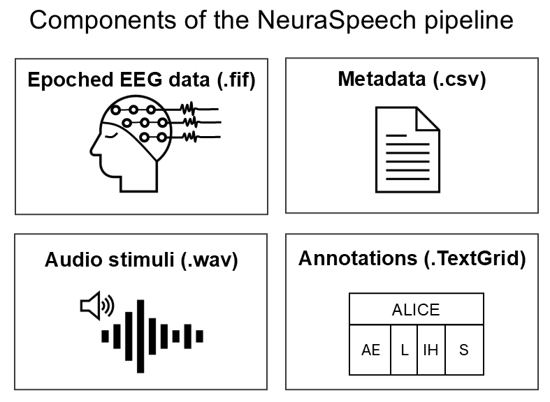

The NeuraSpeech pipeline
Once you have the Python environment set up, you’re ready to use the NeuraSpeech toolbox. The toolbox uses the following four core components to support and streamline EEG analyses. Some components are optional, depending on the analysis module, but epoched EEG data and metadata are always required.

1. Epoched EEG data
This toolbox assumes that all preprocessing has already been completed, including steps such as filtering, ICA, resampling, and epoching. The preprocessed data should be saved as mne.Epochs in .fif format in the same folder. It is recommended that each EEG epoch correspond to a single stimulus audio file. If an epoch contains responses to multiple consecutive audio files, specify this in the metadata file (see below).
2. Metadata
Prepare a .csv spreadsheet that lists each EEG data file and its associated metadata. The job of this spreadsheet is to link EEG data to the corresponding stimulus files. At minimum, the metadata file should include:
- A column containing the EEG data filenames.
- A column containing the stimulus filenames, including file extensions, for all epochs in the corresponding EEG file. Multiple stimulus filenames should be separated by semicolons (
;).
For example, a minimal metadata file may look like this:
| filename | stim |
|---|---|
| sub-01_task-alice.fif | track1.wav;track2.wav;track3.wav;track4.wav;track5.wav |
In this example, sub-01_task-alice.fif contains five epochs, and the stim column lists the corresponding stimulus files in epoch order, separated by semicolons.
If each epoch corresponds to multiple audio files, specify their filenames and presentation order using '+'. For example, the first epoch contains responses to tracks 1-3 and the second epoch contains responses to tracks 4-6:s
| filename | stim |
|---|---|
| sub-01_task-alice.fif | track1.wav+track2.wav+track3.wav;track4.wav+track5.wav+track6.wav |
You are encouraged to add any additional metadata columns that may be useful for your analysis, such as participant ID, session, listening condition, etc (see trf/misc/example_metadata.csv for an example).
3. Audio stimuli
Place all speech or audio stimuli used in your EEG listening experiment in a single folder. Each stimulus should be saved as an individual .wav file.
4. Annotations
These are .TextGrid files containing the annotations of the audio tracks. For PRP analysis, you need at least phoneme annotations marking the beginning and end of each phoneme (this may be obtained using forced aligner tools such as Montreal Forced Aligner). Each TextGrild should have the same filename as the corresponding audio except the extension (e.g., 'track1.TextGrid' for 'track1.wav'). Place all TextGrids in the same folder.